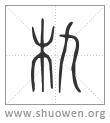

㔳
古文簋从匚飢。

匭
古文簋或从軌。

朹
亦古文簋。
清代 段玉裁《說文解字注》
- 黍稷方器也。
周禮舍人注曰。方曰簠。圓曰簋。盛黍稷稻梁也。掌客注曰。簠、稻梁器也。簋、黍稷器也。秦風傳曰。四簋、黍稷稻粱也。按毛意言簋可以該簠。鄭注則據公食大夫禮分別所盛也。許云簋方簠圜。鄭則云簋圜簠方。不同者、師傳各異也。周易。二簋可用享。鄭注云。離爲日。日體圓。巽爲木。木器圓。簋象。聘禮竹簋方注云。竹簋方者、器名。以竹爲之。狀如簋而方。賈疏云。凡簋皆用木而圓。此則用竹而方。故云如簋而方。宋刻單行疏內簋字凡四見。今本依釋文改經注疏皆作簠字。非也。已上可證鄭確謂簋爲圓器。周禮疏云。孝經陳其簋簠注云。內圓外方受𣁬二升者。直據簠而言。若簋則內方外圓。孝經鄭注、說者謂鄭小同之注也。賈所引文亦不完。則無用㴱求矣。而秦風釋文有內圓外方曰簠、內方外圓曰簋之文。葢本孝經注。聘禮釋文則又方圓字皆互易之。自相乖剌。聶崇義曰。舊圖云內方外圜曰簋、外方內圜曰簠。與秦風音義合。廣韵曰。內圓外方曰簋。歐陽氏集古錄曰。簋外方內圓。與聘禮音義合。攷圜器之內爲之。方方器之內爲之圜。似以木以瓦以竹皆難爲之。他器少如是者。恐孝經注不可信。許鄭皆所不言也。鄭注禮曰。飾葢象龜。葢者意擬之詞。注禮器云。大夫刻爲龜形可證也。聶氏、陳氏禮圖皆於葢頂作一小龜。誤解一葢字耳。見考工記圖。
- 从竹皿皀。
合三字會意。按簋古文或从匚、或从木。葢本以木爲之。大夫刻其文爲龜形。諸矦刻龜而飾以象齒。天子刻龜而飾以玉。其後乃有瓦簋。乃有竹簋方。因製从竹之簋字。木簋竹簋禮器。瓦簋常用器也。皀、穀之馨香。謂黍稷也。居洧切。古音在三部。讀如九。
- 古文簋。从匚食九。
各本作从匚飢。飢非聲也。从方、从食、九聲也。
- 古文簋。从匚軌。
按許說簋爲方器。葢以古文从匚也。軌聲。古音簋軌皆讀如九也。史記李斯傳曰。飯土匭。公食大夫禮注曰。古文簋皆作軌。易損二簋。蜀才作軌。周禮小史故書簋或爲九。大鄭云。九讀爲軌。書亦或爲軌。簋古文也。今本周禮脫誤。爲正之如此。軌九皆古文假借字也。匭古文本字也。匭之字後世用爲匭匣字。尙書苞匭菁茅。鄭曰。匭、纏結也。鄭意謂匭爲糾之假借字。吳都賦注用之。
- 亦古文簋。
簋以木爲之。故字从木也。惠氏棟九經古義曰。易渙奔其机。當作朹。宗廟器也。